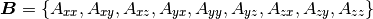

Conventions¶
Dimension¶
Material models are always called with full 3D tensors.
Tensor Storage¶
In general, second-order symmetric tensors are stored as 6x1 arrays with the following ordering
(1)
Tensor components are used for all second-order symmetric tensors.
Nonsymmetric, Second-order tensors are stored as 9x1 arrays in row major ordering, i.e.,

Abaqus Materials¶
For Abaqus materials, the order of the last two components of second-order tensors are modified when the material is called to be consistent with Abaqus/Standard. i.e., the second-order tensor in (1) is passed to an Abaqus material as

Also consistent with Abaqus conventions, the shear components of strain-like tensors are sent to the material model as engineering strains.
Nonsymmetric, Second-order tensors are sent as 3x3 matrices.